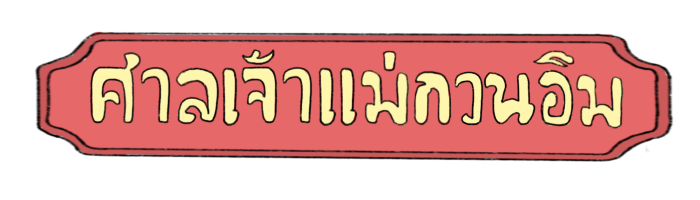
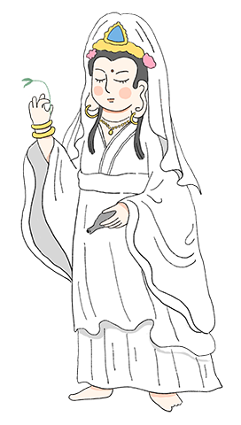
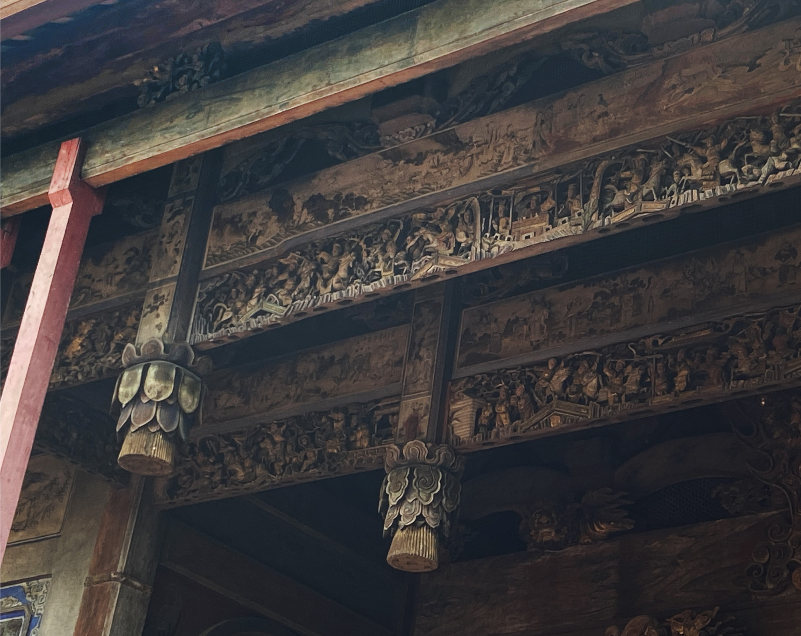

ผู้สร้างศาลเจ้า
ชาวจีนที่ตามเสด็จพระเจ้าตากสิน
ศาลเจ้าเกียนอันเกง หรือ ศาลเจ้าแม่กวนอิม ตั้งอยู่ริมฝั่งแม่น้ำเจ้าพระยา สร้างขึ้นโดยคนจีนที่ตามเสด็จพระเจ้าตากสินมหาราชมาตั้งถิ่นฐานอยู่ที่ปากคลองบางหลวง


เดิมทีศาลเจ้านี้มี 2 หลังติดกัน คือ ศาลเจ้าโจวซือกง และ ศาลเจ้ากวนอู
สมัยรัชกาลที่ 3 มีชาวจีนฮกเกี้ยนเข้ามารื้อศาลทั้งสองที่ลง
แล้วสร้างใหม่เป็นหลังเดียวในตามปัจจุบันมีเจ้าแม่กวนอิมเป็นองค์ประธานหลัก
พระวิหารหลวง
ตัวอาคารศาลเจ้าสร้างด้วยสถาปัตยกรรมจีน และมุงด้วยกระเบื้องโค้งตามแบบจีนแท้
ภายในศาลเจ้ามีเจ้าแม่กวนอิมเป็นเทพประธานหลัก และโดยรอบยังตกแต่งด้วยไม้แกะสลักและภาพจิตรกรรมฝาผนัง

รูปแบบสถาปัตยกรรม
ตัวอาคารศาลเจ้าสร้างด้วยสถาปัตยกรรมจีน และมุงด้วยกระเบื้องโค้งตามแบบจีนแท้
ภายในศาลเจ้ามีเจ้าแม่กวนอิมเป็นเทพประธานหลัก และโดยรอบยังตกแต่งด้วยไม้แกะสลักและภาพจิตรกรรมฝาผนัง